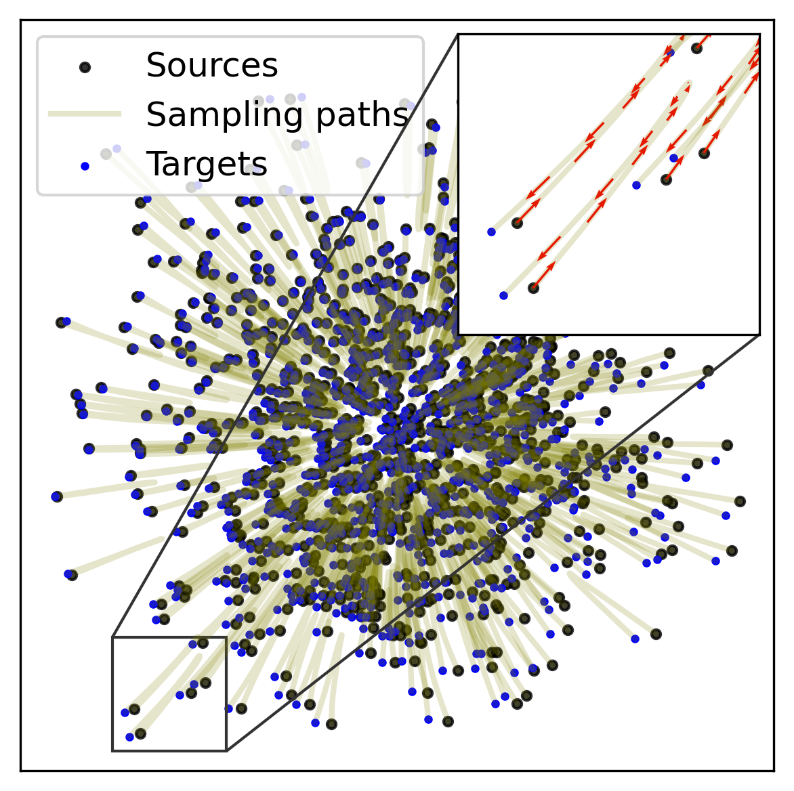
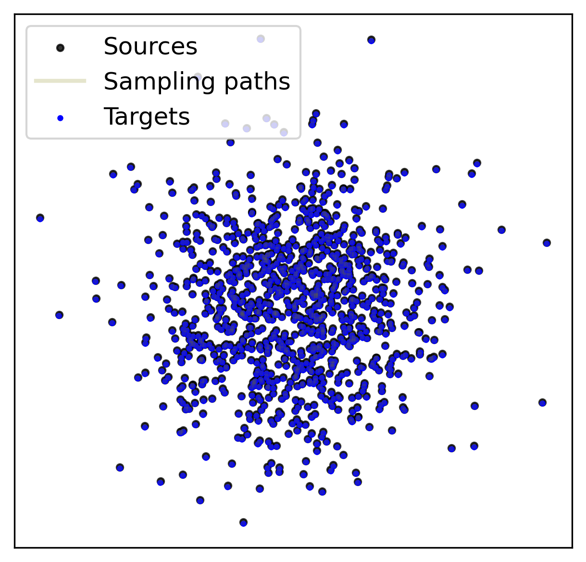

Algorithm
In diffusion and flow-based generative models, to generate a sample, we start from noise and integrate the learned vector field, until a clean data point is reached. However, numerical integration requires discretization, which introduces errors. Finer discretization reduces errors but increases computational cost, making inference slower. Straighter trajectories would reduce the number of function evaluations (NFE) and speed-up sampling.
 
In flow matching the default way of coupling, or sampling minibatches, is to sample noise and data points independently. This leads to ambiguity during the training, as the same input to the network may have multiple different targets in different minibatches. Resolving this ambiguity though averaging results in learning curved sampling trajectories. Prior work has tackled this problem through locally changing the independent coupling by reassigning noise and data points within each separate minibatch (e.g. by solving local OT). However, this approach does not effectively scale to larger and higher-dimensional data.
Similarly to the prior work (e.g. OT-CFM [1] or BatchOT [2]), LOOM-CFM also solves local OT to reassign independently sampled noise-data pairs within a minibatch. However, in contrast to previous approaches, LOOM-CFM works with a fixed set of noise samples and stores the assignments to reuse them as starting points in future minibatches. This procedure allows minibatches to communicate, which leads to finding stricly more globally optimal assignments that the prior work.
To prevent overfitting to the fixed set of noise samples, we propose to store more than one assigned noise sample per data point in the dataset.
At each training iteration a minibatch of data-noise pairs is obtained by first sampling data points
and then randomly picking one of the assigned noises. This corresponds to artificially enlarging the
dataset by duplicating the data points and does not change the underlying data distribution.